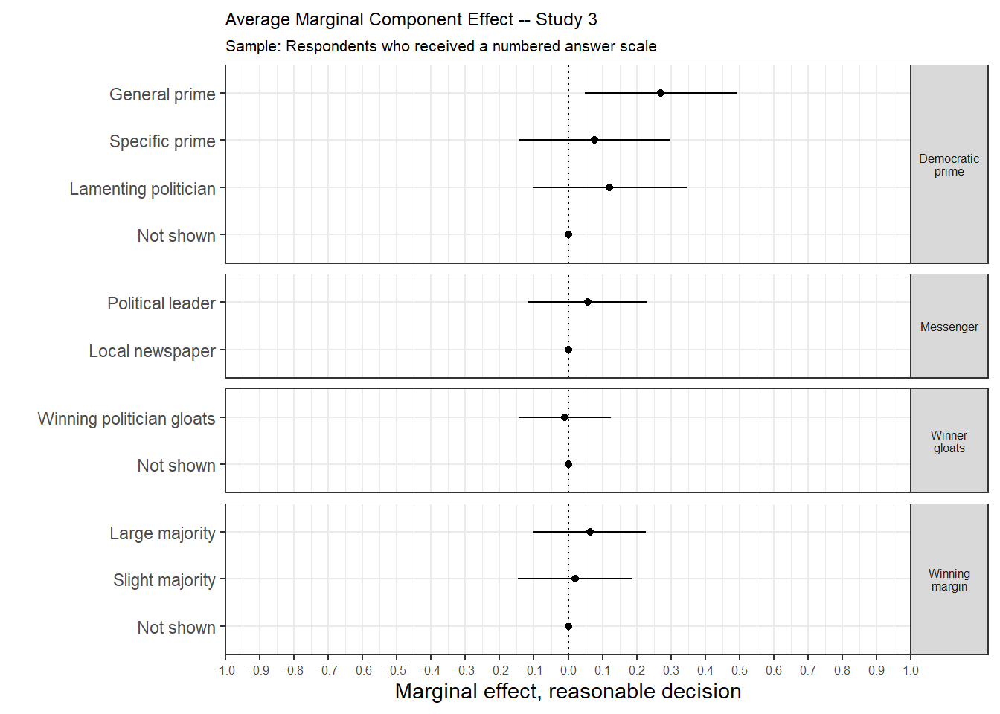
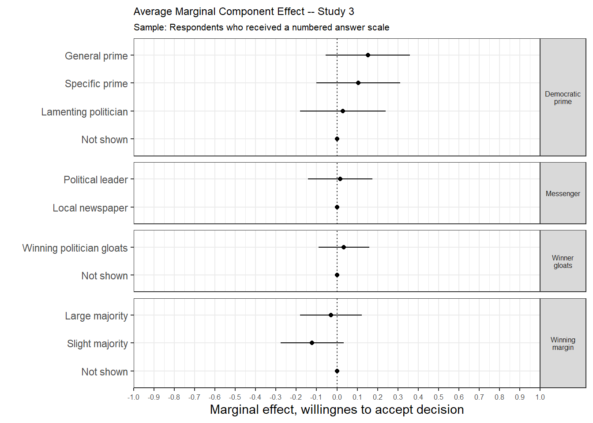

S.I. 12 Numbered answer scale
This subsection shows the treatment effects for the alternative, numbered answer scale. This scale reads:
- 1 Most fair
- 2
- 3
- 4
- 5 Least fair
Half of the respondents were asked to answer the post measures of fairness, reasonableness, and willingness to accept the decision with the regular, worded answer scale, while the other half gets this numbered scale in stead (please note that the scales are reversed in all analyses).
12.1 Reasonable decision
| Treatment value | Estimate | Std. Error | t-statistic | p value |
|---|---|---|---|---|
| Winning margin | ||||
| Not shown | 0.00 | 0.00 | NA | NA |
| Slight majority | 0.02 | 0.08 | 0.24 | 0.81 |
| Large majority | 0.06 | 0.08 | 0.77 | 0.44 |
| Winner gloating | ||||
| Not shown | 0.00 | 0.00 | NA | NA |
| Winning politician gloats | -0.01 | 0.07 | -0.14 | 0.89 |
| Good loser prime | ||||
| Not shown | 0.00 | 0.00 | NA | NA |
| Lamenting politician | 0.12 | 0.11 | 1.08 | 0.28 |
| Specific prime | 0.08 | 0.11 | 0.70 | 0.49 |
| General prime | 0.27 | 0.11 | 2.45 | 0.01 |
| Messenger | ||||
| Local newspaper | 0.00 | 0.00 | NA | NA |
| Political leader | 0.06 | 0.09 | 0.66 | 0.51 |
12.2 Willingnes to accept
| Treatment value | Estimate | Std. Error | t-statistic | p value |
|---|---|---|---|---|
| Winning margin | ||||
| Not shown | 0.00 | 0.00 | NA | NA |
| Slight majority | -0.12 | 0.08 | -1.58 | 0.11 |
| Large majority | -0.03 | 0.08 | -0.39 | 0.70 |
| Winner gloating | ||||
| Not shown | 0.00 | 0.00 | NA | NA |
| Winning politician gloats | 0.03 | 0.06 | 0.55 | 0.58 |
| Good loser prime | ||||
| Not shown | 0.00 | 0.00 | NA | NA |
| Lamenting politician | 0.03 | 0.11 | 0.27 | 0.79 |
| Specific prime | 0.11 | 0.10 | 1.03 | 0.30 |
| General prime | 0.15 | 0.10 | 1.47 | 0.14 |
| Messenger | ||||
| Local newspaper | 0.00 | 0.00 | NA | NA |
| Political leader | 0.02 | 0.08 | 0.21 | 0.83 |
12.3 Fairness perceptions
| Treatment value | Estimate | Std. Error | t-statistic | p value |
|---|---|---|---|---|
| Winning margin | ||||
| Not shown | 0.00 | 0.00 | NA | NA |
| Slight majority | 0.00 | 0.07 | -0.05 | 0.96 |
| Large majority | 0.05 | 0.07 | 0.69 | 0.49 |
| Winner gloating | ||||
| Not shown | 0.00 | 0.00 | NA | NA |
| Winning politician gloats | 0.01 | 0.06 | 0.19 | 0.85 |
| Good loser prime | ||||
| Not shown | 0.00 | 0.00 | NA | NA |
| Lamenting politician | 0.25 | 0.10 | 2.51 | 0.01 |
| Specific prime | 0.18 | 0.10 | 1.82 | 0.07 |
| General prime | 0.27 | 0.10 | 2.82 | 0.00 |
| Messenger | ||||
| Local newspaper | 0.00 | 0.00 | NA | NA |
| Political leader | 0.10 | 0.08 | 1.32 | 0.19 |